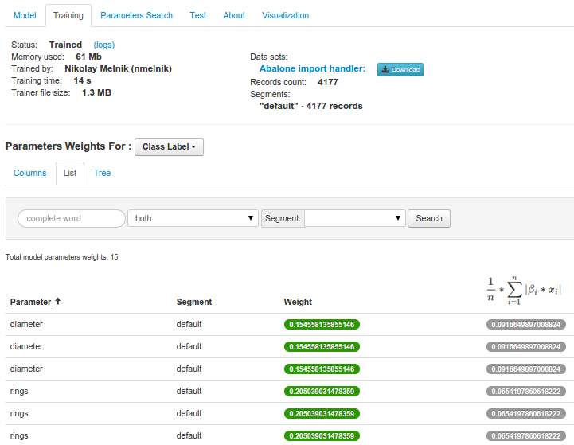

Get Started With CloudML¶
Contents
CloudML aims to provide a set of tools that allow building a classifier on the cloud.
CloudML UI is user iterface, that simplyfies using CloudML. It countains following entities:
- Models, which receives data from the import handler and trains a classifier to produce a classification model. Then user could run tests for models to compare metrics and real data with predicted one.
- Import handlers, that are responsible for feeding the model and tests with data.
- Instances, that represents AWS Instances to be used in model training and tests.
- Predefined entities (classifiers, datasources, feature transformers, scalers, etc.)
The Problem¶
Imagine that you have the machine learning problem like detecting spam messages, determining the language of the message, etc.
The Solution¶
You can use Cloudml to train the model and then use it for predicting results on real data. For this you need to do few steps:
- Import training dataset
- Train the model(s)
- Evaluate this model(s) to determine best one
- Use trained model to make predictions with real data. For more details take a look to Cloudml-predict project.
Example¶
In this example we will use standart Abalone dataset in CSV format from the UCI Machine Learning Repository. And try to predict abalone sex by others specifications.
Getting the data¶
Creating the import handler¶
- Download import handler file (format is described in Cloudml Core documentation).
- Navigate to add import handler page, define unique name and upload xml import handler file. Click to “Add new XML import handler” button.
- After adding You will be redirected to import handler details page. There are 5 sections in it:
- DataSources
- Input Parameters
- Scripts add script
- Import
- Predict
In this importhandler the csv datasource “test_datasource” is defined, that used for importing data from abalone csv data. Also in the import section we could find the root entity with few fields which is same as in Abalone database and square field which is calculated using python script.
Note
You could also don’t add the import handler xml file, when creating the import handler. In this case you can set all import handler parameters in details page using user interface.
Loading the dataset¶
On the import handler details page you need to click “Import DataSet” button on the right-top conner.
{kind=link}
Import handler doesn’t have any input parameters, so you will need to specify only dataset format. Set it as ‘JSON’ and click “Start loading” button.
You will be redirected to the dataset details page:
{kind=link}
Importing data is a background operation. So you will need to wait some time, before it would be completed. Importing data logs would be displayed on “Logs” tab (you will need click to reload button to get latest logs).
{kind=link}
After the dataset would be “Imported”, you could start to use it for training the model.
Creating the model¶
Creating the Cloudml model¶
*. Download features.json file (format is described in Cloudml Core documentation). *. Navigate to add new model page, define unique name, select features.json file and select “Abalone import handler”. Click to “Adding new model” button.
You will be redirected to model details page.
Here we could find few tabs, where displays following information:
- Model
classifier and features, schema-name, group by.
- Training
status, training process log messages and feature weights (if classifier supports them)
- Parameters Search
grid search results
- Tests
list of ref:model tests <testing-model>)
- About
any other information about the model. For example in this tab we could change the import handler.
- Visualization
visualization of the trained model. For not trained model isn’t available.
Uploading existing model¶
For uploading the model you need to navigate to “Upload trained model” page: http://cloudml.int.odesk.com/#/upload_model and define unique name, import handlers and pickled trainer class file.
Note
You could download model trainer from existing model by clicking “download trainer” in model details page. More details in pickled models section
Edditing the model details¶
For edditing model classifier and feature related fields you need to switch to “Model” tab. Editable parameters could be changed by clicking on them.
There are list of features and 3 columns:
- Сlassifier
when clicking to edit link near classifier, the popup opens, where you can change classifier type and fill approprivate parameters.
- Features
- Schema Name
description of the schema. It’s user info, isn’t used for training
- Target Variable
dependent feature name, which we want to predict
- Segmentation
- Group By
you could group by any feature and got a model, which contains few inner model: one for each value of this feature. In our case, let we have feature color of abalone, that could be green, white and blue. In this case we will train 3 inner models, first trained on data in dataset, when color is green, second - white, thrid - blue. And when we predicting, system would refer appropriate inner model (depends of abalone color). On weights and visualization you will also find segments select switcher, to get weights and params for each inner model.
Note
Same to import handler, you could not set features in add model page and choose the classifier with parameters and add features in model details page in UI. Also, you can change classifier or any feature on model details page:
You could view features json on Model tab after to switching to JSON file view
Also you could download it by clicking to “Download Features” file.
Training the model¶
After defining model features and classifier would be completed we could start model training. Click to “Train” button on the right top conner of the model details page. In the opened popup you need to choose:
- way of getting training data
- New Data Set
could be used, when you don’t want to use existing datasets and need create one with other input parameters
- Existing Data Set
displayed successful imported datasets for model’s train import handler.
- Amazon instance, on which model would be trained
- Existing Instance
you could choose one of available AWS Instances
- Request Spot Instance
requestes spot instance. Please don’t use this option for small models
Note
If you running Cloudml-ui localy, don’t forgot to create default instance, named “default”. In this case you models would be runned on the local celery.
After clicking to “Train” button, open “Training” tab, where status and logs would be displayed.

When model training would be completed, you could find feature weights on the Training tab.
Note
Not for all classifiers model weights are available.
For some classifiers extra trained model visualization is available on the “Visualization” tab.
Note
If you wan’t to change classifier, features, etc. of the trained model, you have two ways:
- retrain the model
by clicking “Train” button on the right-top corner of the model details page. In this case all previous model meta data, like weights, tests, etc. would be deleted. And current model would be retrained.
- clone the model
by clicking “Clone” on the right-top corner of model details page. A new model instance would be created with same classifier, features and import handlers. You could train this new model.
Note
You could download pickled trainer class for trainer model by clicking to “Download” button on right-top corner of model details page.
Testing the model¶
Now we need to evaluate the model. Click to “Test” button in the right-top corner of the model details. In the opened popup you need specify way to get data and AWS instance (same to model train popup).
Also, you can set flag “I want to save weights of the parameters.”. In this case you will have “Weights” tab on the test details page, with test specific weights of each model parameter.
Note
Usually we run test on another dataset, not on which we trained the model. To play with different dataset in this model, go to import handler details, find csv datasource declaration and add parameters offset and count to it (for example set count = 2000). And import the dataset for train. Then change it to offset = 2000 and remove count and import dataset for test. In this case for train we will use first 2000 records in the csv file, end from 2000 to end records would be used in second dataset. Now try to train and test model using specific datasets.
But sometimes, it’s usefull to run few test: one on dataset, that used for training and second on another dataset. In this case, comparing accuracy of this tests, we can conclude whether model overfits data.
After clicking to “Start test” button you would be redirected to test details page.
The result of the test is a set of metrics and data with predicted and actual values and feature weights. More information could be found in :ref:`here <test_metrics>`_.
It contains few tabs:
- Metrics
displays classifier related metrics. For classification tasks it’s accuracy, ROC, ROC Auc.
- Confusion Matrix
displays confusion matric(s). It could be few confusion matricses, if there are few segments in the model.
- Examples
list of test examples from the dataset with real and predicted by the trainer model values
- About
additional test specific fields
- Weights
displays test parameters weights
- Logs
displays log messages from the run_test celery task
Note
On the model details page you could fill fields:
- Examples label field name
value of this field will by test example name
- Examples id field name
value of this field will indentify test example
Manually analyze test examples¶
Test example for each row of the test dataset could be find on “Examples” tab of the test details page.
{kind=link}
You could filter examples by real and predicted values, or by any feature, using data filters.
To view any test example details click on it on test details page:
Exporting classification results¶
You could export test examples to CSV file or to the your database by clicking to “Classification Results in CSV” and “Export Classification Results to DB” buttons respectively. More information could be found on the ref:exporting data page.